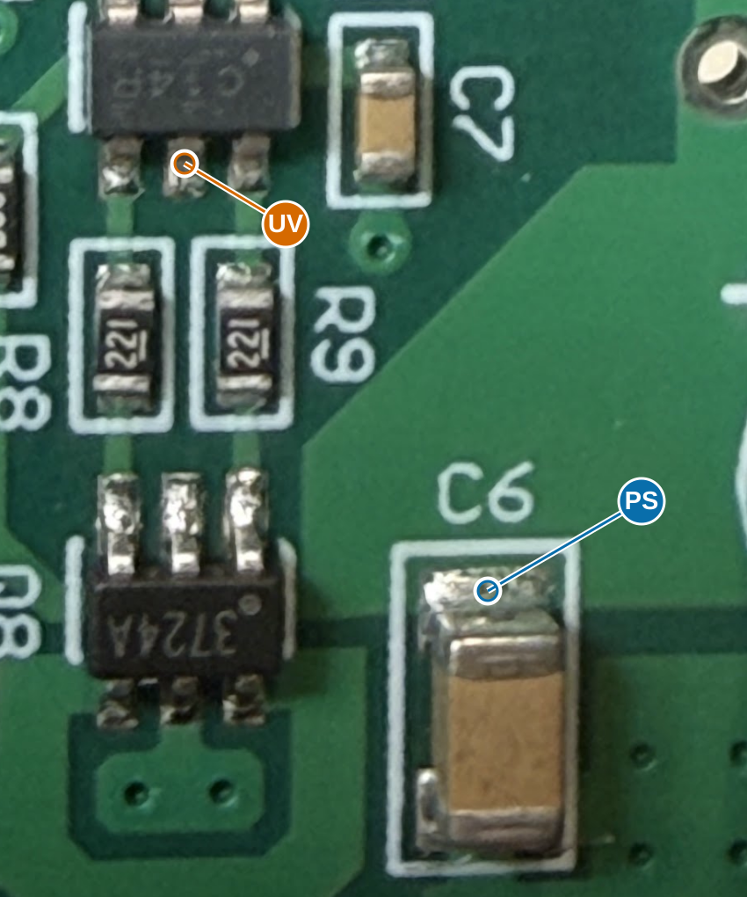
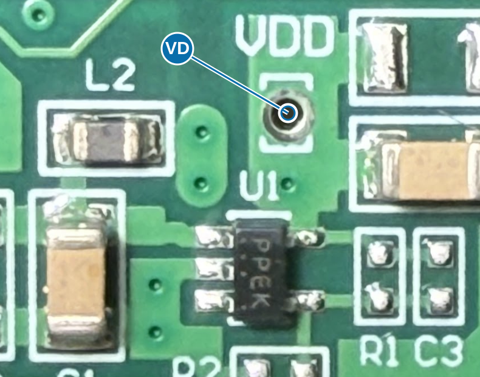

DISCONNECT BATTERY AND PROGRAMMER. Let the supply capacitors discharge and select RESISTANCE (ohms). Keep all parts fitted. UV is on U2, not Q8.
B74: red UV (U2 lower-centre contact) / black PS (C6 upper end). B75: red UV / black VD (printed VDD hole in the second photo). Report ohms, kohms or OL; say changing if unsettled.
U2 supply contact versus the two distinct rails

UV: U2 LOWER-CENTRE contact in this photo, directly above the space between R8 and R9. Physical B2 / candidate VCC pin5. Red probe for both tests.
PS: C6 UPPER metal end, the same source-supply point used in B72. Black probe for B74.
ID
Red probe
Black probe
Condition
Reading
B74
UV
PS
Unpowered
B75
UV
VD
Unpowered
B75 black probe: printed VDD test hole

VD: Printed VDD test hole beside C2 and U1. Black probe for B75. This is the regulated logic test point, not C6 or the battery terminal.
Other probe location for the same reading above; no additional test.
Near probe resistance supports a direct join; high resistance or OL does not. These two tests distinguish the RF supply from regulated VDD. Q8 rest bias is recorded, but U2 pin roles and the exact device remain candidates; do not change rails or diagnose overvoltage from the gate readings alone.
Copy results
Worksheet only; nothing is sent automatically. Copy before closing.
What follows
Resolve hidden paths and device behavior - S1 contacts and the front capacitor-bank ANT2 connection are established. Q3 stays fitted with identification deferred. Two local-only PIC branches, candidate device roles and powered behavior remain.
Recover critical component values - 44 ceramic values; prioritize tuning and receiver after topology.
Finish interface and package mapping - LED colour branches and J5 board-contact/output mapping are established. LED footprint, connector fit and external motor harness orientation remain reproduction qualifications.
ERC: 1 retained U6/U6A output conflict. U6A is DNP; its regulator symbol remains by your request. Other source and library findings are resolved.